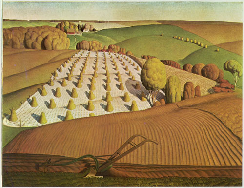

Lately
“There’s nothing more boring than a writer writing.” I read that somewhere and I agree, though would extend it to, “There’s nothing more boring than a writer writing and reading.” No. 11 on my list could read: Writing is not exciting.
In this interview with Geoff Dyer and Elif Batuman, Elif Batuman says, “What am I going to read that’s going to totally rock my world?” And Geoff Dyer mentions an essay he wrote called, Reader’s Block. How depressing! Like opening a stocked fridge but saying, “There’s nothing to eat.”
I’ve been reading China Miéville’s awesome Embassytown. Its intellectual rigor is matched by the solar winds of its imagination. Maybe Elif Batuman and Geoff Dyer could benefit from its sci-fi, twisting and language modifying excitement. Reading Embassytown is better than opening a stocked fridge, eating and sumptuously enjoying everything—extended pleasure without a stomach ache.
And then I’ve discovered the paintings of Grant Wood (best known for his American Gothic). His paintings, with their trees and fields and undulating hills, fill me with the best kind of nostalgia for the Midwest and Michigan, an especially poignant emotion during harvest-time.

Fall Plowing by Grant Wood.
· · · · · · · · · · · · · · · · · · · ·